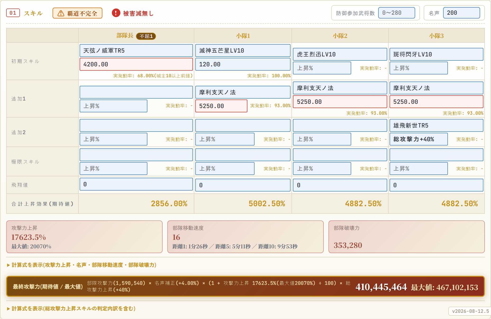
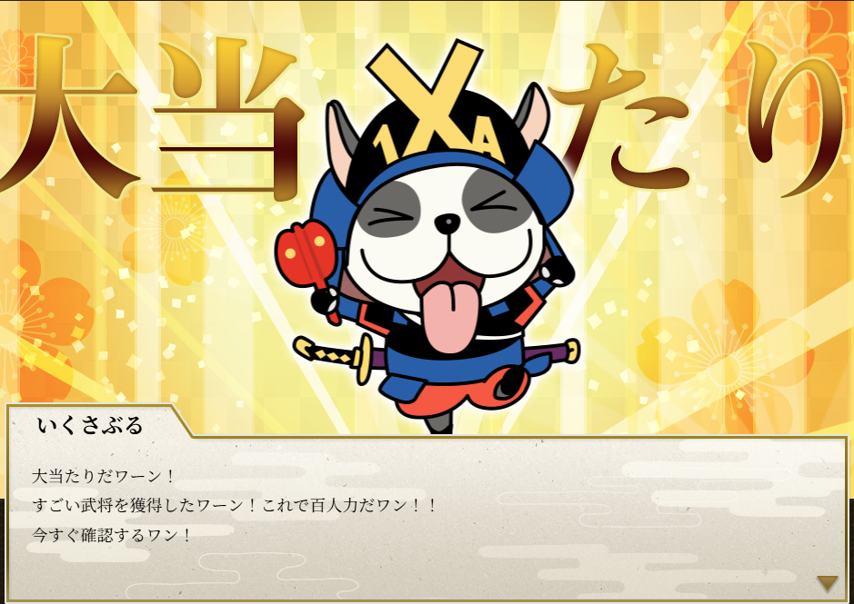

記事
「実際のところ何連必要なのか」「このスキルはどれくらい強いのか」を、推測ではなく実データとシミュレーションで確かめた記事を置いています。
-
攻撃シミュレーターの使い方(v2026-08-12.5 時点)
2026年8月12日攻撃/防御シミュレーターは、部隊長と小隊1〜3の計4名分を入力すると、最終攻撃力までを自動で出すツールです。入力欄が多く見えますが、実際に手で入れるのは3つだけで、残りは武将データベースから引いて埋まります。

-
六角定頼は無課金の星になれるか？
2026年8月11日32章が始まって、すでに数日経過。いろんなところで新天の考察が進んでいますが、私は六角定頼模倣部隊について検証していきます。効果を見る限り盟主戦のイメージがつきやすいですが、少数精鋭系の小規模同盟や影武者狩り、32章から追加された蔵攻撃にも有用です。

-
32章開幕くじは何連で天12種そろうのか
2026年8月10日昨季末に「伊吹は天下を取りに行く」さんの【確率論】パラレル天を引くには金くじ何連が必要か？をみて興味本位でシミュレーターを作ってみた。武将画像もなくまだまだ作成途中ではあるものの、シミュレーターとしては完成。人力で何度か回してみたものの、回数ごとにばらつきが大きいのでAIに丸投げした結果
